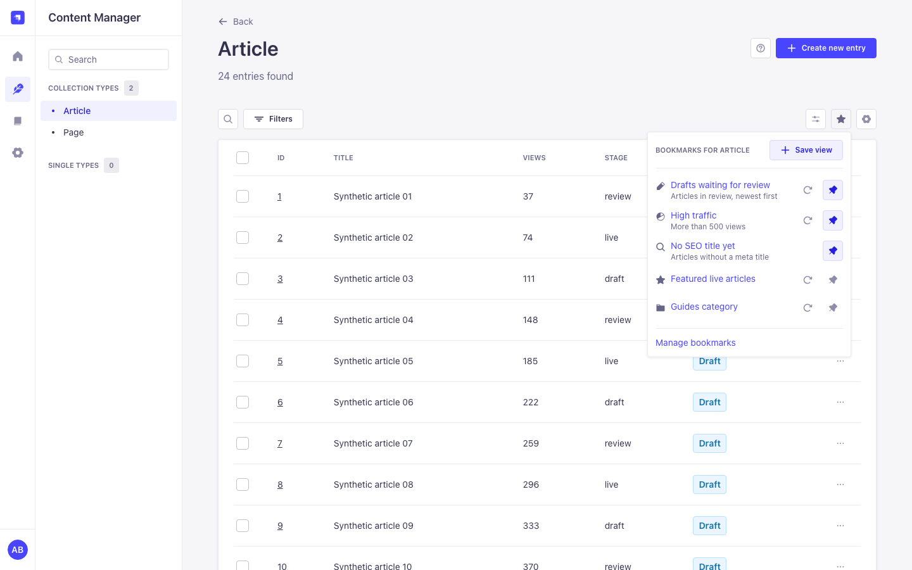
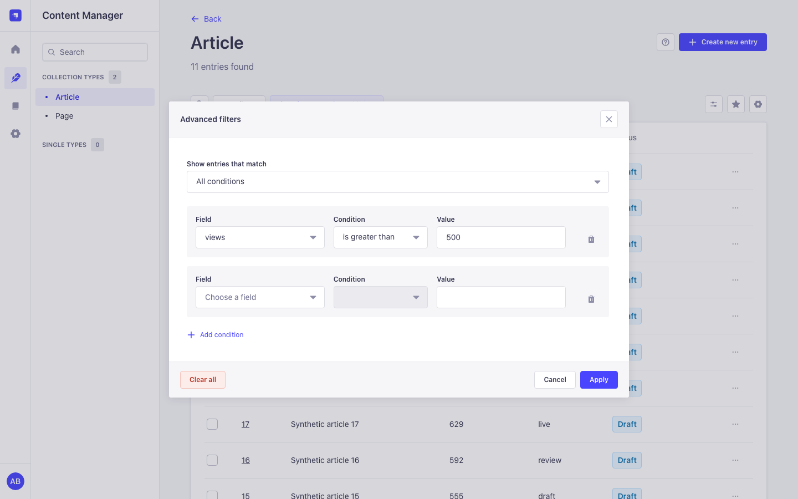
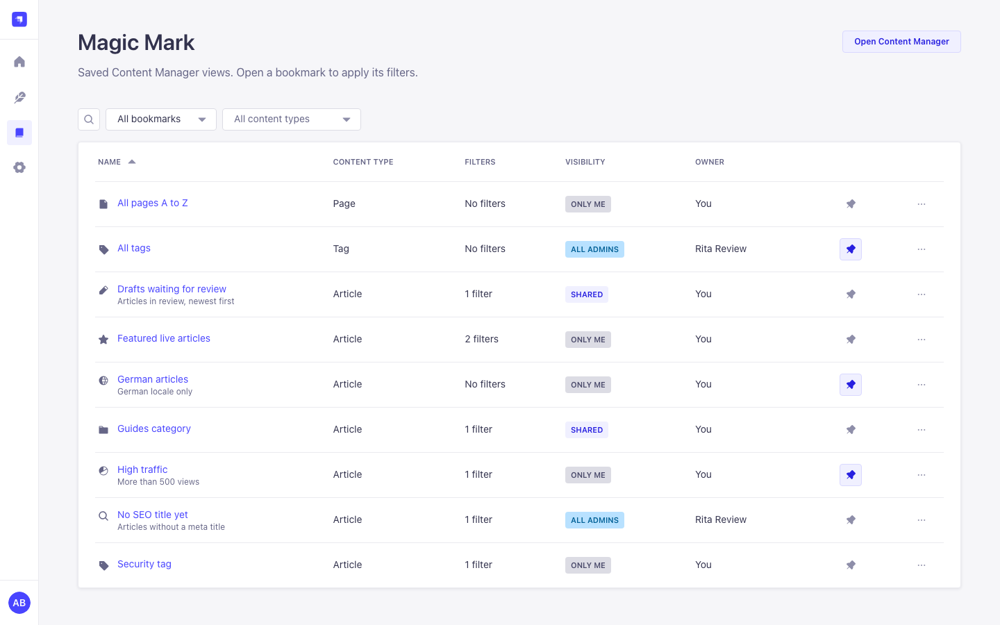

Bookmarks in the list view
A Bookmarks button next to View settings lists the bookmarks of the current content type. Save view captures filters, sort, page size, search and locale.
Magic Mark adds bookmarks and advanced filters to the Strapi 5 Content Manager. Filter a list, save it as a bookmark and share it with roles or admin users. Free, with no license key, no limits and no external calls.
Everything is built with the Strapi Design System, so Magic Mark looks and behaves like the rest of the admin panel, in light and dark mode, from 1440 px down to 320 px.
A Bookmarks button next to View settings lists the bookmarks of the current content type. Save view captures filters, sort, page size, search and locale.
Match all or any condition, use "is one of", "is none of" and "is between", and filter on relation and component fields. All-conditions filters appear as native filter tags.
Keep a bookmark private, share it with roles and individual admin users, or with all admins. Only the owner can change it; recipients can pin and duplicate it.
Search, filter and sort all bookmarks you can see, and pin your favourites to the Strapi homepage widget.



Requires Strapi 5.57 or newer 5.x and Node.js 22.22.2 or newer (or 24.15.0 or newer).
npm install strapi-plugin-magic-markexport default () => ({
'magic-mark': { enabled: true },
});
Rebuild the admin panel with npm run build, then give your roles the Magic
Mark permissions under Settings, Roles, Plugins.
There are no configuration options and no environment variables. Access is controlled with role permissions.
| Permission | Action id | Allows |
|---|---|---|
| Read bookmarks | plugin::magic-mark.bookmarks.read |
See and open bookmarks, pin them, the bookmarks page and widget. |
| Create bookmarks | plugin::magic-mark.bookmarks.create |
Save views and duplicate bookmarks. |
| Edit own bookmarks | plugin::magic-mark.bookmarks.update |
Rename, describe and update the saved view of your bookmarks. |
| Delete own bookmarks | plugin::magic-mark.bookmarks.delete |
Delete your bookmarks. |
| Share bookmarks | plugin::magic-mark.bookmarks.share |
Share with roles, admin users or all admins. |
| Manage shared bookmarks of others | plugin::magic-mark.bookmarks.manage |
Edit and delete every public or shared bookmark, also ones of deleted users (Show > All shared bookmarks). Private bookmarks of others stay private. |
admin::hasPermissions). A bookmark you cannot see answers 404; one you
can see but do not own answers 403 when you try to change it.
Admin routes under /magic-mark. There are no Content API routes.
| Method | Path | Permissions | Purpose |
|---|---|---|---|
GET |
/bookmarks |
read | Paginated list with search, scope, sort and content type filters. |
POST |
/bookmarks |
read, create | Create a bookmark; sharing also needs share. |
GET |
/bookmarks/:id |
read | One bookmark; sharing lists for the owner and managers. |
PUT |
/bookmarks/:id |
read, update | Edit name, description, icon and sharing (owner or manage). |
DELETE |
/bookmarks/:id |
read, delete | Delete a bookmark (owner or manage). |
PUT |
/bookmarks/:id/view |
read, update | Save the current view into a bookmark. |
POST |
/bookmarks/:id/duplicate |
read, create | Private copy owned by the caller. |
PUT |
/bookmarks/:id/pin |
read | Pin or unpin for the caller only. |
GET |
/sharing/roles, /sharing/users |
share | Roles, and a paginated admin user search for sharing. |
Yes. The license system of 3.x is gone and every feature is available to everyone.
No. It makes no outbound requests and has no telemetry.
No, also not as Super Admin. Managers see public and shared bookmarks of everyone under Show > All shared bookmarks, including ones whose owner was deleted.
No. The page number is not saved, so a bookmark opens on page 1 with its filters, sort, page size, search and locale.
Strapi shows only $and filters as tags. The list is still filtered
correctly; open Advanced filters to change or clear them.
Releases use semantic-release from the main branch with Conventional Commits. CI runs lint, format check, tests, type checks, build and verify on Node 22 and 24.
npm ci --legacy-peer-deps
npm run lint
npm run format:check
npm test
npm run build
npm run verifyUpgrading from 3.x needs no manual steps: permissions, shares and pins are migrated on the first start. See the README for details.